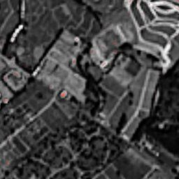
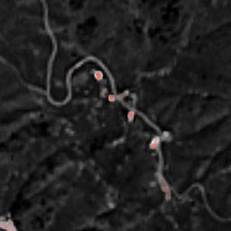
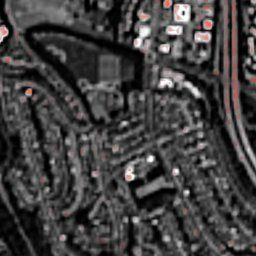

Utilities lose 20–40% of treated water to leaks. Systematic national detection from 2 m moisture indices, every 2–3 days, no tasking, no per-area pricing. Patent-pending.
The only commercial satellite leak service today tasks SAR satellites that cannot economically cover a whole national network at proactive frequency. SkySpera's 2 m multispectral gives systematic global coverage every 2–3 days at a resolution matched to real leak signatures. Native Sentinel-2 at 10–20 m cannot resolve a 2–8 m leak; at 2 m the anomaly spans multiple pixels and becomes statistically detectable. Detection prioritises soil moisture (responds within days), using NDMI and MSAVI plus a proprietary multi-index fusion, with vegetation vigour as secondary confirmation. Persistent anomalies along known pipeline routes — uncorrelated with rainfall — generate high-confidence, geolocated alerts. Delivered as a subscription: national baseline, continuous 2–3 day monitoring, and alerts ready for GIS.




Tell us the ground you need to watch — we'll show you what SkySpera can do with it.
Talk to us